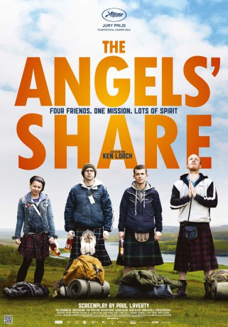

Auszeichnungen: 2 BAFTA-Awards gewonnen
 gesehen am 08.01.2018
gesehen am 08.01.2018Alternativ: The Angels' Share
Auszeichnungen: 2 BAFTA-Awards gewonnen gesehen am 08.01.2018
 
 IMDB-Wertung: 7.0 / 10
IMDB-Wertung: 7.0 / 10  Metascore:
Metascore: 
This bitter sweet comedy follows protagonist Robbie as he sneaks into the maternity hospital to visit his young girlfriend Leonie and hold his newborn son Luke for the first time. Overwhelmed by the moment, he swears that Luke will not have the same tragic life he has had. Escaping a prison sentence by the skin of his teeth, he's given one last chance......While serving a community service order, he meets Rhino, Albert and Mo who, like him, find it impossible to find work because of their criminal records. Little did Robbie imagine how turning to drink might change their lives - not cheap fortified wine, but the best malt whiskies in the world. Will it be 'slopping out' for the next twenty years, or a new future with 'Uisge Beatha' the 'Water of Life?' Only the angels know........
Jahr: 2012
Dauer: 100 Minuten
FSK: 12
Land: England Studio: Prokino FilmverleihTonspuren: DTS - ,
Untertitel:
Auflösung: 1080p (1920x1040) Größe: 9492 MB
Regisseur: Ken Loach
Drehbuch: Paul Laverty
Soundtrack: George Fenton
Darsteller:
 Roger Allam als Thaddeus
Roger Allam als Thaddeus John Henshaw als Harry
John Henshaw als HarryDatei: X:\2012(A-F)\Angels' Share - Ein Schluck für die Engel (2012, FSK12, 1920x1040).mkv seit 07.01.2018
Festplatte: HD 2012(A-M)
 Es gibt insgesamt 102 Filme in der Gruppe '2012(A-F)'
Es gibt insgesamt 102 Filme in der Gruppe '2012(A-F)'